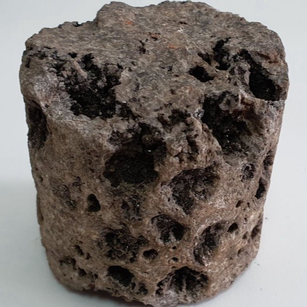

Абсолютная ликвидация поглощений
Действие вязко-упругого раствора S-Drill™ Concrete основывается на определении порометрических характеристик пласта путем последовательного ввода калиброванных инертных наполнителей различного размера и состава.
